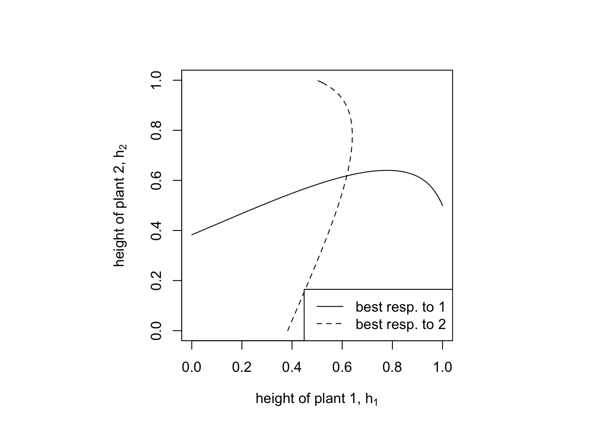

Exercise: Games Plants Play
A simple model for plant growth
Here, we follow re-analyse the model Hanna Kokko desribes in Chapter 6 of her book Modelling for Field Biologists. This model asks: Why do plants invest energy into growing a stem instead of investing all energy into leaf biomass?
Kokko assumes that the fitness of a plant is determined by two factors: firstly, how much leaf tissue there is in the plant (denoted f ), and, secondly, how much each leaf is able to photosynthesize (denoted g). The amount of leaf tissue, f, can be expressed as the fraction of the plant’s above-ground biomass that is not ‘wasted’ on nonphotosynthesizing tissue such as the stem. Leaf tissue is important because a plant’s photo-synthesis depends completely on this tissue, and everything else such as building good roots for survival, or forming seeds or fruit for repro- duction, is ultimately limited by the amount of photosynthesis performed by the leaves. We make the simple assumption that the more photosynthesis, the more there will eventually be seeds or pollen a plant is able to produce. Therefore we can consider a plant’s fitness to be proportional to the product fg.
The next step is to how plant height h affects f and g. Note that there seems to be a maximum for plant height around 100 m because plants ultimately depend on capillary action for getting water to the leaves, and gravity increasingly hinders this process at great vertical distances. So, f and g should be functions of h. First, f should be a monotonically decreasing function of h since more and more energy is invested into the growth of a stem. Kokkos suggest the functional
\[ f(h)=1-h^\alpha, \]
where the parameter \(\alpha\) determines how fast f increases with h. To explore this function we can plot it for different values of \(\alpha\). First, let us define the function f(h) in R:
f <- function(h) {
1 - h^alpha
}Next, let us plot is for several different values of the parameter \(\alpha\):
alpha <- 2
curve(f(x), from = 0, to = 1, col ="blue", xlab = "plant height", ylab = "proportion of leaf tissue")
alpha <- 3
curve(f(x), from = 0, to = 1, col ="orange", add = TRUE)
alpha <- 5
curve(f(x), from = 0, to = 1, col ="green", add = TRUE)
legend("topright", legend = c(expression(paste(alpha, " = ", 2)),
expression(paste(alpha, " = ", 3)),
expression(paste(alpha, " = ", 5))), lty =1, col = c("blue", "orange", "green"))Thus, the larger \(\alpha\), the slower does f decrease with plant height h. Said differently, small values of \(\alpha\) mean that growing taller has immediate large costs for leaf biomass, while large values allow the plant to grow quite tall quite easily before the full cost kicks in. For example, a plant species whose structural tissue is mechanically very stable will need less of it, and it will have a high value for \(\alpha\) as a consequence. One might therefore interpret \(\alpha\) as a kind of ‘efficiency’ or ‘stability’ of the structural tissue. However, regardless of \(\alpha\) there are no resources left for leaves to grow when h reaches the maximum value h=1.
The shape of the function g(h) is more complicated because photosynthesis depends on the amount of light falling on a leaf, which depends on how high the leaf is situated relative to the leaves of other plants around. We here follow the same simplifying assumption made by Kokko and assume that the amount of light on the leaves of a focal plant with height \(h_1\) is affected by the height \(h_2\) of its ‘neighbour’, limiting the number of players to two. The amount of sunlight for the focal plant is then assumed to depend on the height difference between the two plants, \(g(h_1-h_2)\). Kokko suggest the following function
\[ g(h_1, h_2)=P_L+\frac{P_H-P_L}{1+\exp\left(-\beta(h_1 - h_2)\right)}. \]
This function looks rather complicated. To beter understand it is useful to plot it:
g <- function(h.1, h.2) {
P.L + (P.H - P.L)/(1 + exp(-beta*(h.1 - h.2)))
}
beta <- 10
P.L <- 0.2
P.H <- 1
curve(g(x, h.2 = 0.5), from = 0, to = 1, xlab = expression("plant height, " * h[1]), ylim = c(0,1), ylab = expression("photosythesis/leaf, " * g(h[1], h[2])), col = "blue")
P.L <- 0.2
P.H <- 1
beta <- 5
curve(g(x, h.2 = 0.5), from = 0, to = 1, add = TRUE, col = "orange")
P.L <- 0.4
P.H <- 0.8
beta <- 10
curve(g(x, h.2 = 0.5), from = 0, to = 1, add = TRUE, col = "green")
legend("topleft", legend = c(expression(paste(beta, " = 10, ", I[L], " = 0.2, ", I[H], " = 1")),
expression(paste(beta, " = 5, ", I[L], " = 0.2, ", I[H], " = 1")),
expression(paste(beta, " = 10, ", I[L], " = 0.4, ", I[H], " = 0.8"))), lty =1, col = c("blue", "orange", "green"))
The shape of the function is S-shaped as a function of the height \(h_1\) of the focal plant. As \(h_1\) approaches 0, the value of \(g(h_1)\) approaches the value of \(P_L\). Thus, \(P_L\) can be interpreted as the amount of photosynthesis of a plant without stem that is maximally shaded by the other plant with height \(h_2=0.5\). On the other end, as \(h_1\) approaches 1, the value of \(g(h_1)\) approaches the value of \(P_H\). Thus, \(P_H\) can be interpreted as the amount of photosynthesis of a plant with a stem of maximum length that experience no shading from the other plant. If both plants are equally high, \(h_1=0.5=h_2\), then \(g(h)\) is eaxtly halfway between \(P_L\) and \(P_H\).
Now we have everything in place to look at the payoff for a plant with height \(h_1\) when competing against a plant with height \(h_2\), denoted \(w(h_1, h_2)\). The payoff for a plant with height \(h_2\) competing against a plant with height \(h_1\) is denoted by reversing the order of the arguments in the payoff function \(w\).
\[ \begin{align} w(h_1, h_2) & = f(h_1)g(h_1, h_2)\\ w(h_2, h_1) & = f(h_2)g(h_2, h_1) \end{align} \]
Next we reproduce the pay-off matrix shown in Table 6.1 Kokko (2006). First, we define the functions for these pay-offs.
w.h.1.h.2 <- function(h.1, h.2) {
f(h.1) * g(h.1, h.2)
}
w.h.2.h.1 <- function(h.2, h.1) {
f(h.2) * g(h.2, h.1)
}Next, we compute the entries in the pay-off matrix using exactly the same parameter values as in Kokko (2006).
alpha <- 3
beta <- 5
h.2 <- 0.5
P.L <- 0.25
P.H <- 1Payoff to plant with height \(h_1\) (first number in the matrix in Kokko).
round(outer(c(0,1/3,2/3,1), c(0,1/3,2/3,1), w.h.1.h.2), digits = 3)## [,1] [,2] [,3] [,4]
## [1,] 0.625 0.369 0.276 0.255
## [2,] 0.848 0.602 0.355 0.266
## [3,] 0.686 0.620 0.440 0.260
## [4,] 0.000 0.000 0.000 0.000Payoff to plant with height \(h_2\) (second number in the matrix in Kokko).
round(outer(c(0,1/3,2/3,1), c(0,1/3,2/3,1), w.h.2.h.1), digits = 3)## [,1] [,2] [,3] [,4]
## [1,] 0.625 0.369 0.276 0.255
## [2,] 0.848 0.602 0.355 0.266
## [3,] 0.686 0.620 0.440 0.260
## [4,] 0.000 0.000 0.000 0.000The next step by Hanna Kokko is to ask about the best response of one plant to a given strategy by the other plant, that is, the height that maximizes the pay-off given a certain height by the competing plant. Let us do this by allowing any height, not just a height from a set of four. Thus, we aim at immediately reproducing figure 6.4(b) in Kokko (2006).
First, let us plot the pay-off for all possible choices of \(h_1\) given that \(h_2=0.5\). The strategy that corresponds to the maximum of this curve is the optimal response \(h_1\) given \(h_2\).
curve(w.h.1.h.2(x, h.2), from = 0, to = 1, xlab = expression("height "* h[1]), ylab = expression("payoff " * w(h[1], h[2] * "=0.5")))In the next step we find the value of \(h_1\) that results in the highest possible pay-off \(w(h_1, h_2)\).
best.response <- function(h.2) {
optimize(w.h.1.h.2, interval=c(0, 1), maximum = TRUE, h.2)$maximum
}
best.response(h.2 = 0.5)## [1] 0.5839456In conclusion, if plant 2 plays strategy \(h_2=0.5\), then plant 1 maximizes its pay-off by playing \(h_1=0.58\). To obtain the best response curve, perform the computation above for all values of \(h_2\) between 0 and 1. Next we repeat the same procedure from the perspective plant 2.
best.response.curve <- sapply(seq(0, 1, 0.01), best.response)
par(pty="s")
plot(seq(0, 1, 0.01), best.response.curve, type = "l", xlim = c(0,1), ylim = c(0,1), asp = 1, xlab = expression("height of plant 1, " * h[1] ), ylab = expression("height of plant 2, " * h[2] ))
lines(best.response.curve, seq(0, 1, 0.01), type = "l", lty = 2)
legend("bottomright", legend = c("best resp. to 1", "best resp. to 2"), lty = c(1, 2)) 
What this shows, is that this game between two plants has exactly one Nash equilibrium given by the intersection of the two best response curve. Thus, if plants have approximatley the height 0.62, then all plants play the best response with respect to each other.
- First focus on the case that both carrying capacities are equal,
K1=K2, and that the intrinsic growth rates are relatively small, say,r1, r2 <1. Under this scenario, look at the following cases: \[ \begin{align} \mathrm{i)\,\,} & \alpha<1<\beta\\ \mathrm{ii)\,\,} & \alpha>1>\beta\\ \mathrm{iii)\,\,} & 1<\alpha, \beta\\ \mathrm{iv)\,\,} & \alpha, \beta<1 \end{align} \] Allow the two carrying capacities to differ from each other, for instance,
K1 < K2. Does this alter your previous results? If yes, how?The fact that the single-species logistic equation allows for overshooting and complicated population dynamical cycles when r>2 carries over to the LV-competition model in discrete time (note, that this is not possible in the continuous time versions of both these models). Investigate this possibility for the special case that the intrinsic growth rates and carrying capacities of both species are equal to each other,
r1 = r2and andK1 = K2. What happens if both growth rates are close to 2 but slightly less and what happens if you increase both growth rates slightly above 2? You could combine this investigation with the different configurations that the competition competition coefficients can take as listed under (1).